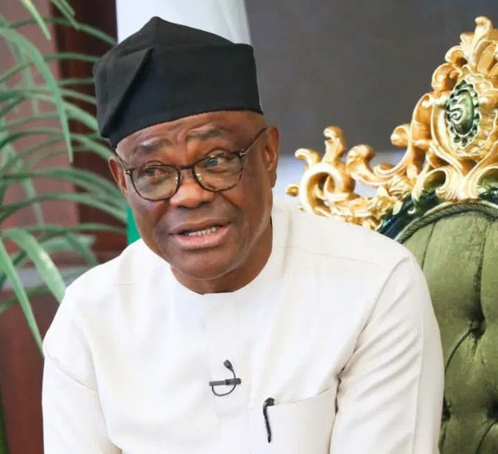

2027: FCT, Rivers in the bag, give me Imo and Kwara, Wike begs Tinubu

FCT Minister Nyesom Wike has asked President Bola Tinubu and the director general of the APC Presidential Campaign Council, Senator Abdul’aziz Abubakar Yari, to assign him Imo and Kwara states to mobilise support for Tinubu’s re-election in 2027. Speaking at a Rainbow Coalition town hall in Gokana, Rivers State, on Wednesday, Wike said political preparations in Rivers and the Federal Capital Territory were already in place.
“I am done with these states,” Wike said, referring to Rivers and the FCT, which he said he had been assigned to coordinate. He said he wanted to work in Imo because he had heard of political problems there. For Kwara, he said his understanding of divisions in the state came from social media and had not been confirmed.
Wike also urged Gokana residents to support a second term for Tinubu. He praised the president’s decisions on removing the fuel subsidy and increasing allocations to state and local governments, and cited the establishment of the Federal University of Environment in Ogoniland. He encouraged residents to maintain their political relationship with Tinubu rather than move towards an uncertain alternative.
The minister praised local stakeholders for working together through the Rainbow Coalition, a campaign group that has drawn him into disputes with Imo Governor Hope Uzodimma and Kwara Governor Abdulrahman Abdulrazaq. Coalition coordinator in Gokana Kenneth Kobani said the meeting brought together different parts of the community. APC South-South National Vice Chairman Victor Tombari Giadom predicted the coalition could secure up to 90 per cent of Gokana’s votes in 2027, while Senator Magnus Abe credited Wike with helping reconcile divided political leaders.
Source: Vanguard